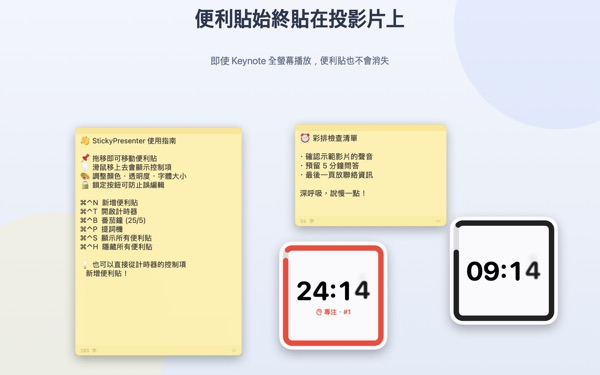
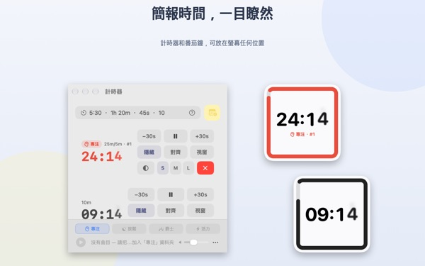
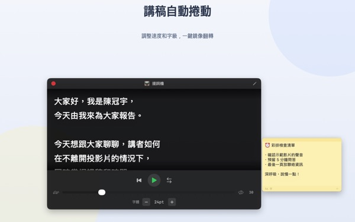
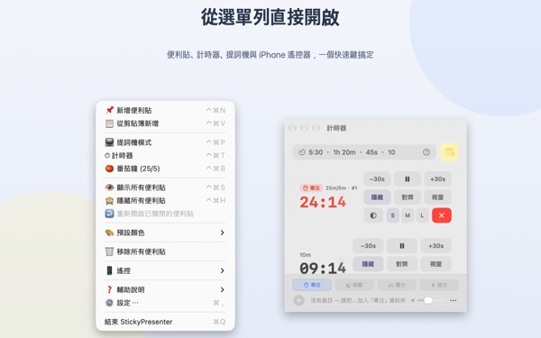

講稿和剩餘時間
就在投影片上
Keynote 切成全螢幕後，便利貼和計時器依然浮在上面。它們不會搶走簡報 App 的焦點，簡報筆照樣換頁。
所有功能免費。需要 macOS 14 或以上版本。

放到投影片上試試看
用跟 App 一樣的寫法輸入時間。按一下 15s，馬上就能看到快結束時小工具怎麼提醒你。
上台時，講稿和時間要放哪裡？
簡報者備忘稿要多佔一個螢幕，低頭看手錶台下一定會發現。貼在筆電上的紙條，說不定也掉過。StickyPresenter 把講稿和剩餘時間直接貼在投影片上方，就在你視線會停留的地方。
瞄一眼就知道還剩多久
螢幕角落的方形小工具會顯示剩餘時間。快結束時轉成紅色，時間到就響起提示音並閃爍邊框。
時間可以隨手寫成 5:30 或 1h 20m，寫 25/5 就是專注和休息輪流的番茄鐘。把計時器另開成視窗，螢幕分享或 AirPlay 時就能只投這個視窗。

看著鏡頭讀講稿
提詞機照你設定的速度捲動講稿，到最後會自動停下。複製講稿後按 ⌘⌃P，就會直接用這段文字開啟。
也有給半透鏡讀稿設備用的左右鏡像，速度和字級下次開啟時都還在。

不必離開投影片
它安靜地待在選單列，沒有 Dock 圖像，也沒有要顧的視窗。⌘⌃N 新增便利貼、⌘⌃T 打開計時器等快速鍵，在全螢幕簡報中也能立刻反應。
在台上，用免費的 iPhone App Remote Controller for Sticky 就能開始或暫停計時，還能把擋到投影片的小工具移開。

三個步驟就能開始
- 1
打開 App
選單列會出現便利貼圖像，第一次開啟時會顯示使用指南。
- 2
放好便利貼和計時器
複製講稿後按
⌘⌃V，再在計時欄填入簡報時間。 - 3
投影片切成全螢幕
便利貼和計時器依然留在上方。
快速鍵與時間寫法
- ⌘⌃N
- 新增便利貼
- ⌘⌃V
- 用剪貼簿內容新增便利貼
- ⌘⌃T
- 顯示或隱藏計時器
- ⌘⌃B
- 開始番茄鐘（專注 25 分鐘，休息 5 分鐘）
- ⌘⌃P
- 提詞機
- ⌘⌃S · ⌘⌃H
- 顯示或隱藏所有便利貼
- 10
- 只寫數字代表分鐘（10 分鐘）
- 5:30 · 1:15:00
- 分:秒，時:分:秒
- 1h 20m · 45s
- 加上單位
- 25/5
- 專注/休息，一直循環到你停止
所有快速鍵都是同時按 Command（⌘）和 Control（⌃），在其他 App 裡也能用。計時最長可設定到 99:59:59。
常見問題
真的免費嗎？
是的。所有功能都免費，iPhone App Remote Controller for Sticky 也是另一款免費 App。如果覺得好用，可以在設定裡給開發者小費，小費不會開啟任何功能。
螢幕分享或鏡像輸出時，可以只顯示計時器嗎？
可以。按計時器那一列的「視窗」按鈕，把它開成一般視窗，它就會出現在螢幕分享和 AirPlay 的視窗清單裡，可以只分享這個視窗。
把計時器小工具隱藏後找不到了。
在計時器視窗把游標移到那一列上，小工具的位置會用虛線標出。按「對齊」就能把它叫回計時器視窗旁邊。
不小心把便利貼關掉了。
從選單列的「重新開啟已關閉的便利貼」最多能救回最近 20 張。便利貼隨寫隨存，重新開啟 App 後也會回到原位。
快速鍵沒有反應。
使用指南的快速鍵表中標示「被其他 App 使用」的，代表另一個 App 先佔用了。結束那個 App 後就會恢復。不需要輔助使用權限。
變色龍主題為什麼要螢幕錄製權限？
變色龍會讀取小工具後方畫面的顏色來配色，所以需要這項權限。畫面不會被儲存或傳送。不給權限的話，系統、淺色、深色主題照樣可以用。
背景音樂要怎麼放？
在計時器視窗下方的音樂列選一種氣氛（專注、放鬆、爵士、活力），App 會替每種氣氛建好資料夾。把自己的音樂放進去，就會跟著計時器依序播放。App 本身不附音樂。
iPhone 遙控器找不到 Mac。
請依序確認：Mac 上的 StickyPresenter 有沒有在執行（看選單列圖像）；兩台裝置是否在同一個 Wi‑Fi（訪客網路或行動網路不行）；iPhone 和 Mac 的「隱私權與安全性」裡是否都允許「區域網路」；VPN 是否已關閉。
遙控器說配對碼不對。
請輸入 Mac 選單列「遙控」裡目前顯示的四位數配對碼。如果按過「產生新的配對碼」，就只有新的碼有效。配對一次之後，下次打開 App 就會自動連上。
別人會不會操作到我的計時器？
不知道配對碼就不行。Mac 只接受輸入正確配對碼的遙控器，而且只在區域網路內以加密的直接連線溝通。如果配對碼曾被別人看到，可以在選單列「遙控」選「產生新的配對碼」或「清除已配對的遙控器」。
便利貼和講稿存在哪裡？
只存在這台 Mac 上。沒有帳號，也沒有廣告。除了匿名使用統計和你主動送出的意見，不會有任何內容上網。
有疑問、遇到問題或想提建議，請寄信到 mizzking75@gmail.com。